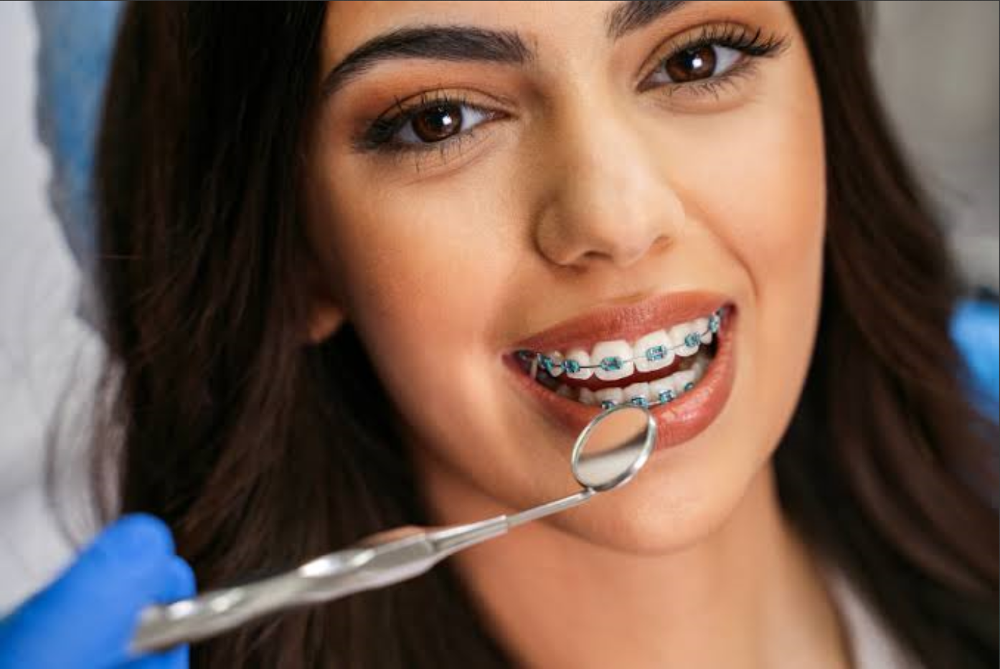

Cuidar do seu sorriso
é cuidar de você.
Desde 2011, a Amey Clinic constrói um cuidado odontológico baseado em consciência, técnica e atenção verdadeira às pessoas.
Agendar avaliação com orientação
Desde 2011, a Amey Clinic constrói um cuidado odontológico baseado em consciência, técnica e atenção verdadeira às pessoas.
Agendar avaliação com orientação
cuidados realizados com responsabilidade e segurança
Cuidando de sorrisos e transformando vidas.
A Amey Clinic foi criada em 2011 com um propósito claro: oferecer um cuidado odontológico consciente, humano e baseado em evidências.
Aqui, não tratamos apenas os dentes, mas olhamos para a pessoa que sorri, para a história por trás de cada sorriso. Somos seu guia para decisões informadas, sempre com técnica, acolhimento e responsabilidade.
Nosso papel é orientar com clareza, para que cada paciente se sinta seguro, respeitado e bem informado. Unimos técnica, acolhimento e responsabilidade para construir tratamentos éticos, personalizados e conscientes.
Cada diagnóstico e tratamento
são pensados e explicados com
clareza e responsabilidade.
Ambiente controlado,
técnicas fundamentadas na
ciência e equipamentos de ponta.
Construímos relações genuínas
e transparentes, respeitando
seu tempo e suas ideias.
Aqui seu conforto emocional
e físico são prioridade em
cada atendimento.
Conheça nossas áreas de atuação

Planejamento completo para devolver função, conforto e estética.
Substituição de dentes perdidos com segurança e naturalidade.


Soluções fixas ou removíveis para conforto e harmonia do sorriso.
Alinhamento e mordida com técnicas modernas e acompanhamento contínuo.


Prevenção, diagnóstico e cuidado contínuo da saúde bucal.
Procedimentos cirúrgicos com indicação precisa e segurança.

Avaliações reais de pacientes que confiaram no cuidado da Amey Clinic ao longo dos anos.


Esclarecemos suas principais dúvidas para que você se sinta seguro(a) em cada etapa do cuidado.
Não encontrou sua dúvida? Nossa equipe está pronta para orientar você com cuidado e clareza.
Falar com a Amey Clinic
Aqui, você é ouvido.
Cada decisão é explicada.
Cada cuidado é pensado com respeito à sua história.
Cuidamos de pessoas, não apenas de dentes.
Com orientação, clareza e um olhar atento em cada etapa do seu cuidado.